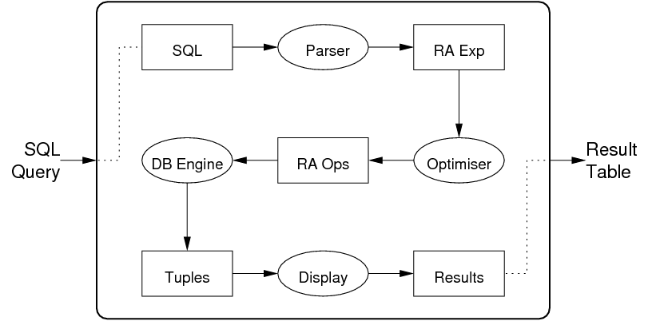
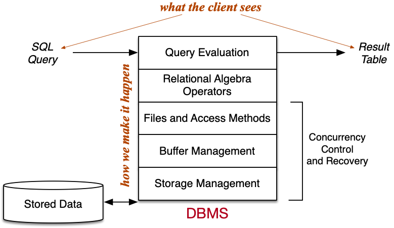
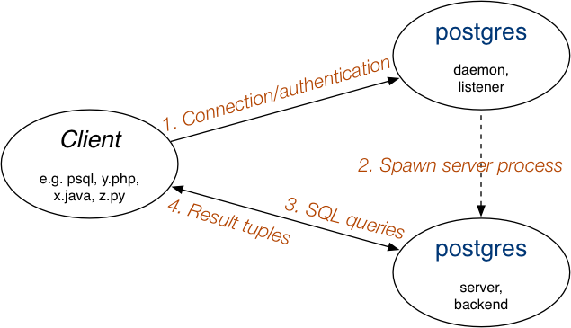
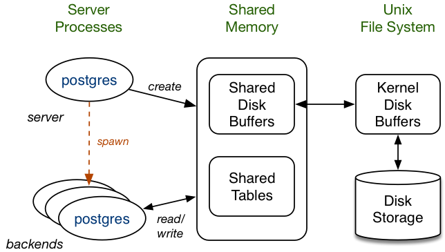
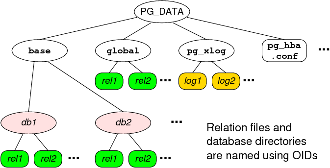
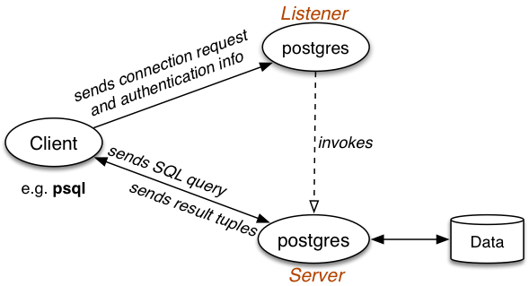

COMP9315 Week 01 Thursday Lecture
COMP9315 24T1 ♢ Week 1 Thursday Lecture ♢ [0/53]
- Enrolments: MyUNSW → downloads → Webcms3 and SMS
- Polls: C experience, DBMS experience
- Prac Exercise 01: who has a PostgreSQL server on
vxdb?
- Installing from source on Windows ... Chapter 18 of PG Docs
- Learn to use VLab/Linux ... needed for the Exam
- if you use a Mac, Terminal ≅ xTerm in VLab
- if you use Windows, you have my deepest sympathy
- YouTube videos will appear next morning; Echo360 overnight
COMP9315 24T1 ♢ Week 1 Thursday Lecture ♢ [1/53]
❖ Database Engine Operations | |
DB engine = "relational algebra virtual machine".
Common operators of relational algebra (RA):
| selection (σ ) |
| projection (π ) |
| join (⋈ ) |
| union (∪) |
| intersection (∩) |
| difference (-) |
| sort |
| group |
| aggregate |
For each of these operations:
- various data structures and algorithms are available
- DBMSs may provide only one, or may provide a choice
COMP9315 24T1 ♢ Week 1 Thursday Lecture ♢ [2/53]
All RA operators return a result of type relation.
For convenience, we can name a result and use it later.
E.g. database R1(x,y), R2(y,z),
Tmp1(x,y) = Sel[x>5]R1
Tmp2(y,z) = Sel[z=3]R2
Tmp3(x,y,z) = Tmp1 Join Tmp2
Res(x,z) = Proj[x,z] Tmp3
Tmp1(x,y,z) = R1 Join R2
Tmp2(x,y,z) = Sel[x>5 & z=3] Tmp1
Res(x,z) = Proj[x,z]Tmp2
Each "intermediate result" has a well-defined schema.
COMP9315 24T1 ♢ Week 1 Thursday Lecture ♢ [3/53]
❖ Exercise: Relational Algebra (i) | |
Assume a schema: R(a,b,c), S(x,y)
Translate each of the following SQL statements to RA
- select * from R
- select a,b from R
- select * from R where a > 5
- select * from R join S on R.a = S.y
Indicate: the fields and # tuples in the result
COMP9315 24T1 ♢ Week 1 Thursday Lecture ♢ [4/53]
❖ Exercise: Relational Algebra (ii) | |
Using the following student/course/enrolment schema:
Students(sid, name, degree, ...)
Courses(cid, code, term, title, ...)
Enrolments(sid, cid, mark, grade)
write relational algebra expressions to solve the problem
- find all students who passed COMP9315 in 18s2
- for each student, give (student ID, name, mark)
Express it as a sequence of steps, where each step uses one RA operation.
COMP9315 24T1 ♢ Week 1 Thursday Lecture ♢ [5/53]
Path of a query through a typical DBMS:

COMP9315 24T1 ♢ Week 1 Thursday Lecture ♢ [6/53]
❖ A Relational Algebra Engine | |

COMP9315 24T1 ♢ Week 1 Thursday Lecture ♢ [7/53]
COMP9315 24T1 ♢ Week 1 Thursday Lecture ♢ [8/53]
PostgreSQL is a full-featured open-source (O)RDBMS.
- provides a relational engine with:
- efficient implementation of relational operations
- transaction processing (concurrent access)
- backup/recovery (from application/system failure)
- novel query optimisation (genetic algorithm-based)
- replication, JSON, extensible indexing, etc. etc.
- already supports several non-standard data types
- allows users to define their own data types
- supports most of the SQL3 standard
COMP9315 24T1 ♢ Week 1 Thursday Lecture ♢ [9/53]
❖ User View of PostgreSQL | |
Users interact via SQL in a client process, e.g.
$ psql webcms
psql (15.6)
Type "help" for help.
webcms2=# select * from calendar;
id | course | evdate | event
----+--------+------------+---------------------------
1 | 4 | 2001-08-09 | Project Proposals due
10 | 3 | 2001-08-01 | Tute/Lab Enrolments Close
12 | 3 | 2001-09-07 | Assignment #1 Due (10pm)
...
or
$dbconn = pg_connect("dbname=webcms");
$result = pg_query($dbconn,"select * from calendar");
while ($tuple = pg_fetch_array($result))
{ ... $tuple["event"] ... }
COMP9315 24T1 ♢ Week 1 Thursday Lecture ♢ [10/53]
❖ PostgreSQL Functionality | |
PostgreSQL systems deal with various kinds of objects:
- users ... who can access the system
- groups ... groups of users, for role-based privileges
- databases ... collections of schemas/tables/views/...
- namespaces ... to uniquely identify objects (schema.table.attr)
- tables ... collection of tuples (standard relational notion)
- views ... "virtual" tables (can be made updatable)
- functions ... operations on values from/in tables
- triggers ... operations invoked in response to events
- operators ... functions with infix syntax
- aggregates ... operations over whole table columns
- types ... user-defined data types (with own operations)
- rules ... for query rewriting (used e.g. to implement views)
- access methods ... efficient access to tuples in tables
COMP9315 24T1 ♢ Week 1 Thursday Lecture ♢ [11/53]
❖ PostgreSQL Functionality (cont) | |
PostgreSQL's dialect of SQL is mostly standard
(but with extensions).
- attributes containing arrays of atomic values
create table R ( id integer, a integer[] );
insert into R values ( 123, '{5,4,3,2,1}' );
- table type inheritance
create table S ( x float, y float );
create table T inherits ( R, S ); T(id,a,x,y)
- table-valued functions
create function f(integer) returns setof R;
COMP9315 24T1 ♢ Week 1 Thursday Lecture ♢ [12/53]
❖ PostgreSQL Functionality (cont) | |
PostgreSQL stored procedures differ from SQL standard:
- only provides functions, not procedures
(but functions can return void, effectively a procedure)
- allows function overloading
(same function name, different argument types)
- defined at different "lexical level" to SQL
- provides own PL/SQL-like language for functions
create function ( ArgTypes ) returns ResultType
as $$
... body of function definition ...
$$ language FunctionBodyLanguage;
COMP9315 24T1 ♢ Week 1 Thursday Lecture ♢ [13/53]
❖ PostgreSQL Functionality (cont) | |
Example:
create or replace function
barsIn(suburb text) returns setof Bars
as $$
declare
r record;
begin
for r in
select * from Bars where location = suburb
loop
return next r;
end loop;
end;
$$ language plpgsql;
select * from barsIn('Randwick');
COMP9315 24T1 ♢ Week 1 Thursday Lecture ♢ [14/53]
❖ PostgreSQL Functionality (cont) | |
Uses multi-version concurrency control (MVCC)
- multiple "versions" of the database exist together
- a transaction sees the version that was valid at its start-time
- readers don't block writers; writers don't block readers
- this significantly reduces the need for locking
Disadvantages of this approach:
- need to check "existence" of each tuple in transaction
- extra storage for old versions of tuples (
vacuum fixes this)
PostgreSQL also provides locking to enforce critical concurrency.
COMP9315 24T1 ♢ Week 1 Thursday Lecture ♢ [15/53]
❖ PostgreSQL Functionality (cont) | |
PostgreSQL has a well-defined and open extensibility model:
- stored procedures are held in database as strings
- allows a variety of languages to be used
- language interpreters can be integrated into engine
- can add new data types, operators, aggregates, indexes
- typically requires code written in C, following defined API
- for new data types, need to write input/output functions, ...
- for new indexes, need to implement file structures
COMP9315 24T1 ♢ Week 1 Thursday Lecture ♢ [16/53]
COMP9315 24T1 ♢ Week 1 Thursday Lecture ♢ [17/53]
RDBMSs manage different kinds of objects
- databases, schemas, tablespaces
- relations/tables, attributes, tuples/records
- constraints, assertions
- views, stored procedures, triggers, rules
Many objects have names
(and, in PostgreSQL, all can have OIDs).
How are the different types of objects represented?
How do we go from a name (or OID) to bytes stored on disk?
COMP9315 24T1 ♢ Week 1 Thursday Lecture ♢ [18/53]
Consider what information the RDBMS needs about relations:
- name, owner, primary key of each relation
- name, data type, constraints for each attribute
- authorisation for operations on each relation
Similarly for other DBMS objects
(e.g. views, functions, triggers, ...)
This information is stored in the system catalog tables
Standard for catalogs in SQL:2003: INFORMATION_SCHEMA
COMP9315 24T1 ♢ Week 1 Thursday Lecture ♢ [19/53]
The catalog is affected by several types of SQL operations:
-
create Object as Definition
-
drop Object ...
-
alter Object Changes
-
grant Privilege on Object
where
Object is one of table, view, function, trigger, schema, ...
E.g. drop table Groups; produces something like
delete from Tables
where schema = 'public' and name = 'groups';
COMP9315 24T1 ♢ Week 1 Thursday Lecture ♢ [20/53]
In PostgreSQL, the system catalog is available to users via:
- special commands in the
psql shell (e.g. \d)
- SQL standard
information_schema
e.g. select * from information_schema.tables;
The low-level representation is available to sysadmins via:
- a global schema called
pg_catalog
- a set of tables/views in that schema (e.g.
pg_tables)
COMP9315 24T1 ♢ Week 1 Thursday Lecture ♢ [21/53]
You can explore the PostgreSQl catalog via psql commands
-
\d gives a list of all tables and views
-
\d Table gives a schema for Table
-
\df gives a list of user-defined functions
-
\df+ Function gives details of Function
-
\ef Function allows you to edit Function
-
\dv gives a list of user-defined views
-
\d+ View gives definition of View
You can also explore via SQL on the catalog tables
COMP9315 24T1 ♢ Week 1 Thursday Lecture ♢ [22/53]
A PostgreSQL installation (cluster) typically has many DBs
Some catalog information is global, e.g.
- catalog tables defining: databases, users, ...
- one copy of each such table for the whole PostgreSQL installation
- shared by all databases in the cluster
(in
PGDATA/pg_global)
Other catalog information is local to each database, e.g
- schemas, tables, attributes, functions, types, ...
- separate copy of each "local" table in each database
- a copy of many "global" tables is made on database creation
COMP9315 24T1 ♢ Week 1 Thursday Lecture ♢ [23/53]
Side-note: PostgreSQL tuples contain
- owner-specified attributes (from
create table)
- system-defined attributes
oid |
|
unique identifying number for tuple (optional)
|
tableoid |
|
which table this tuple belongs to
|
xmin/xmax |
|
which transaction created/deleted tuple (for MVCC)
|
OIDs are used as primary keys in many of the catalog tables.
COMP9315 24T1 ♢ Week 1 Thursday Lecture ♢ [24/53]
Above the level of individual DB schemata, we have:
- databases ... represented by
pg_database
- schemas ... represented by
pg_namespace
- table spaces ... represented by
pg_tablespace
These tables are global to each PostgreSQL cluster.
Keys are names (strings) and must be unique within cluster.
COMP9315 24T1 ♢ Week 1 Thursday Lecture ♢ [25/53]
❖ Representing Databases (cont) | |
pg_database contains information about databases:
-
oid, datname, datdba, datacl[], encoding, ...
pg_namespace contains information about schemata:
-
oid, nspname, nspowner, nspacl[]
pg_tablespace contains information about tablespaces:
-
oid, spcname, spcowner, spcacl[]
PostgreSQL represents access via array of access items:
Role=Privileges/Grantor
where Privileges is a string enumerating privileges, e.g.
jas=arwdRxt/jas,fred=r/jas,joe=rwad/jas
COMP9315 24T1 ♢ Week 1 Thursday Lecture ♢ [26/53]
Representing one table needs tuples in several catalog tables.
Due to O-O heritage, base table for tables is called pg_class.
The pg_class table also handles other "table-like" objects:
- views ... represents attributes/domains of view
- composite (tuple) types ... from
CREATE TYPE AS
- sequences, indexes (top-level defn), other "special" objects
All tuples in
pg_class have an OID, used as primary key.
Some fields from the pg_class table:
-
oid, relname, relnamespace, reltype, relowner
-
relkind, reltuples, relnatts, relhaspkey, relacl, ...
COMP9315 24T1 ♢ Week 1 Thursday Lecture ♢ [27/53]
❖ Representing Tables (cont) | |
Details of catalog tables representing database tables
pg_class holds core information about tables
-
relname, relnamespace, reltype, relowner, ...
-
relkind, relnatts, relhaspkey, relacl[], ...
pg_attribute contains information about attributes
-
attrelid, attname, atttypid, attnum, ...
pg_type contains information about types
-
typname, typnamespace, typowner, typlen, ...
-
typtype, typrelid, typinput, typoutput, ...
COMP9315 24T1 ♢ Week 1 Thursday Lecture ♢ [28/53]
❖ Exercise: Table Statistics | |
Using the PostgreSQL catalog, write a PLpgSQL function
- to return table name and #tuples in table
- for all tables in the
public schema
create type TableInfo as (table text, ntuples int);
create function pop() returns setof TableInfo ...
Hints:
-
table is a reserved word
- you will need to use dynamically-generated queries.
COMP9315 24T1 ♢ Week 1 Thursday Lecture ♢ [29/53]
❖ Exercise: Extracting a Schema | |
Write a PLpgSQL function:
-
function schema() returns setof text
- giving a list of table schemas in the
public schema
It should behave as follows:
db=# select * from schema();
tables
---------------------------
table1(x, y, z)
table2(a, b)
table3(id, name, address)
...
COMP9315 24T1 ♢ Week 1 Thursday Lecture ♢ [30/53]
❖ Exercise: Enumerated Types | |
PostgreSQL allows you to define enumerated types, e.g.
create type Mood as enum ('sad', 'happy');
Creates a type with two ordered values 'sad' < 'happy'
What is created in the catalog for the above definition?
Hint:
pg_type(oid, typname, typelen, typetype, ...)
pg_enum(oid, enumtypid, enumlabel)
COMP9315 24T1 ♢ Week 1 Thursday Lecture ♢ [31/53]
❖ PostgreSQL Architecture | |
COMP9315 24T1 ♢ Week 1 Thursday Lecture ♢ [32/53]
❖ PostgreSQL Architecture | |
Client/server architecture:

The listener process is sometimes called postmaster
COMP9315 24T1 ♢ Week 1 Thursday Lecture ♢ [33/53]
❖ PostgreSQL Architecture (cont) | |
Memory/storage architecture:

COMP9315 24T1 ♢ Week 1 Thursday Lecture ♢ [34/53]
❖ PostgreSQL Architecture (cont) | |
File-system architecture:

COMP9315 24T1 ♢ Week 1 Thursday Lecture ♢ [35/53]
❖ Exercise: PostgreSQL Data Files | |
PostgreSQL uses OIDs as
- the name of the directory for each database
- the name of the files for each table
Using the
pg_catalog tables, find ..
- the directory for the
beer database
- the data files for the
Beers and Breweries tables
Relevant catalog info ...
pg_database(oid,datname,...)
pg_class(oid,relname,...)
COMP9315 24T1 ♢ Week 1 Thursday Lecture ♢ [36/53]
Top-level of PostgreSQL distribution contains:
- README,INSTALL: overview and installation instructions
- config*: scripts to build localised Makefiles
- Makefile: top-level script to control system build
- src: sub-directories containing system source code
- doc: FAQs and documentation
- contrib: source code for contributed extensions
COMP9315 24T1 ♢ Week 1 Thursday Lecture ♢ [37/53]
❖ PostgreSQL Source Code (cont) | |
The source code directory (src) contains:
- include: *.h files with global definitions (constants, types, ...)
- backend: code for PostgreSQL database engine
- bin: code for clients (e.g. psql, pg_ctl, pg_dump, ...)
- pl: stored procedure language interpreters (e.g. plpgsql)
- interfaces code for low-level C interfaces (e.g. libpq)
along with Makefiles to build system and other directories ...
Code for backend (DBMS engine)
- ~2200 files (~1200.c, ~1000.h, 9.y, 11.l), ~106 lines of code
COMP9315 24T1 ♢ Week 1 Thursday Lecture ♢ [38/53]
❖ PostgreSQL Source Code (cont) | |
How to get started understanding the workings of PostgreSQL:
- become familiar with the user-level interface
- start with the *.h files, then move to *.c files
- *.c files live under src/backend/*
- *.h files live under src/include)
- start globally, then work one subsystem-at-a-time
Some helpful information is available via:
- PostgreSQL Doco link on web site
- Readings link on web site
COMP9315 24T1 ♢ Week 1 Thursday Lecture ♢ [39/53]
❖ PostgreSQL Source Code (cont) | |
PostgreSQL documentation has detailed description of internals:
- Section VII, Chapters 52 - 76
- Ch.52 is an overview; a good place to start
- other chapters discuss specific components
See also "How PostgreSQL Processes a Query"
-
src/tools/backend/index.html
COMP9315 24T1 ♢ Week 1 Thursday Lecture ♢ [40/53]
❖ Life-cycle of a PostgreSQL query | |
How a PostgreSQL query is executed:
- SQL query string is produced in client
- client establishes connection to PostgreSQL
- dedicated server process attached to client
- SQL query string sent to server process
- server parses/plans/optimises query
- server executes query to produce result tuples
- tuples are transmitted back to client
- client disconnects from server
COMP9315 24T1 ♢ Week 1 Thursday Lecture ♢ [41/53]
❖ Life-cycle of a PostgreSQL query (cont) | |
Data flow to get to execute a query:

COMP9315 24T1 ♢ Week 1 Thursday Lecture ♢ [42/53]
PostgresMain(int argc, char *argv[], ...)
- defined in
src/backend/tcop/postgres.c
- PostgreSQL server (
postgres) main loop
- performs much setting up/initialisation
- reads and executes requests from client
- using the frontend/backend protocol (Ch.46)
- on
Q request, evaluates supplied query
- on
X request, exits the server process
COMP9315 24T1 ♢ Week 1 Thursday Lecture ♢ [43/53]
❖ PostgreSQL server (cont) | |
As well as handling SQL queries, PostgresqlMain also
- handles "utility" commands e.g.
CREATE TABLE
- most utility commands modify catalog (e.g.
CREATE X)
- other commands affect server (e.g.
vacuum)
- handles
COPY command
- special
COPY mode; context is one table
- reads line-by-line, treats each line as tuple
- inserts tuples into table; at end, checks constraints
COMP9315 24T1 ♢ Week 1 Thursday Lecture ♢ [44/53]
Data types defined in *.h files under src/include/
Two important data types: Node and List
-
Node provides generic structure for nodes
- defined in
src/include/nodes/nodes.h
- specific node types defined in
src/include/nodes/*.h
- functions on nodes defined in
src/backend/nodes/*.c
-
Node types: parse trees, plan trees, execution trees, ...
-
List provides generic singly-linked list
- defined in
src/include/nodes/pg_list.h
- functions on lists defined in
src/backend/nodes/list.c
COMP9315 24T1 ♢ Week 1 Thursday Lecture ♢ [45/53]
❖ PostgreSQL Query Evaluation | |
exec_simple_query(const char *query_string)
- defined in
src/backend/tcop/postgres.c
- entry point for evaluating SQL queries
- assumes
query_string is one or more SQL statements
- performs much setting up/initialisation
- parses the SQL string (into one or more parse trees)
- for each parsed query ...
- perform any rule-based rewriting
- produces an evaluation plan (optimisation)
- execute the plan, sending tuples to client
COMP9315 24T1 ♢ Week 1 Thursday Lecture ♢ [46/53]
❖ PostgreSQL Query Evaluation (cont) | |
pg_parse_query(char *sqlStatements)
- defined in
src/backend/tcop/postgres.c
- returns list of parse trees, one for each SQL statement
pg_analyze_and_rewrite(Node *parsetree, ...)
- defined in
src/backend/tcop/postgres.c
- converts parsed queries into form suitable for planning
COMP9315 24T1 ♢ Week 1 Thursday Lecture ♢ [47/53]
❖ PostgreSQL Query Evaluation (cont) | |
Each query is represented by a Query structure
- defined in
src/include/nodes/parsenodes.h
- holds all components of the SQL query, including
- required columns as list of
TargetEntrys
- referenced tables as list of
RangeTblEntrys
-
where clause as node in FromExpr struct
- sorting requirements as list of
SortGroupClauses
- queries may be nested, so forms a tree structure
COMP9315 24T1 ♢ Week 1 Thursday Lecture ♢ [48/53]
❖ PostgreSQL Query Evaluation (cont) | |
pg_plan_queries(querytree_list, ...)
- defined in
src/backend/tcop/postgres.c
- converts analyzed queries into executable "statements"
- uses
pg_plan_query() to plan each Query
- defined in
src/backend/tcop/postgres.c
- uses
planner() to actually do the planning
- defined in
optimizer/plan/planner.c
COMP9315 24T1 ♢ Week 1 Thursday Lecture ♢ [49/53]
❖ PostgreSQL Query Evaluation (cont) | |
Each executable query is represented by a PlannedStmt node
- defined in
src/include/nodes/plannodes.h
- contains information for execution of query, e.g.
- which relations are involved, output tuple struecture, etc.
- most important component is a tree of
Plan nodes
Each
Plan node represents one relational operation
- types:
SeqScan, IndexScan, HashJoin, Sort, ...
- each
Plan node also contains cost estimates for operation
COMP9315 24T1 ♢ Week 1 Thursday Lecture ♢ [50/53]
❖ PostgreSQL Query Evaluation (cont) | |
PlannedStmt *planner(Query *parse, ...)
- defined in
optimizer/plan/planner.c
-
subquery_planner() performs standard transformations
- e.g. push selection and projection down the tree
- then invokes a cost-based optimiser:
- choose possible plan (execution order for operations)
- choose physical operations for this plan
- estimate cost of this plan (using DB statistics)
- do this for sufficient cases and pick cheapest
COMP9315 24T1 ♢ Week 1 Thursday Lecture ♢ [51/53]
❖ PostgreSQL Query Evaluation (cont) | |
Queries run in a Portal environment containing
- the planned statement(s) (trees of
Plan nodes)
- run-time versions of
Plan nodes (under QueryDesc)
- description of result tuples (under
TupleDesc)
- overall state of scan through result tuples (e.g.
atStart)
- other context information (transaction, memory, ...)
Portal defined in
src/include/utils/portal.h
PortalRun() function also requires
- destination for query results (e.g. connection to client)
- scan direction (forward or backward)
COMP9315 24T1 ♢ Week 1 Thursday Lecture ♢ [52/53]
❖ PostgreSQL Query Evaluation (cont) | |
How query evaluation happens in exec_simple_query():
- parse, rewrite and plan ⇒
PlannedStmts
- for each
PlannedStmt ...
- create
Portal structure
- then insert
PlannedStmt into portal
- then set up
CommandDest to receive results
- then invoke
PortalRun(portal,...,dest,...)
-
PortalRun...() invokes ProcessQuery(plan,...)
-
ProcessQuery() makes QueryDesc from plan
- then invoke
ExecutorRun(qdesc,...)
-
ExecutorRun() invokes ExecutePlan() to generate result
COMP9315 24T1 ♢ Week 1 Thursday Lecture ♢ [53/53]
Produced: 16 Feb 2024